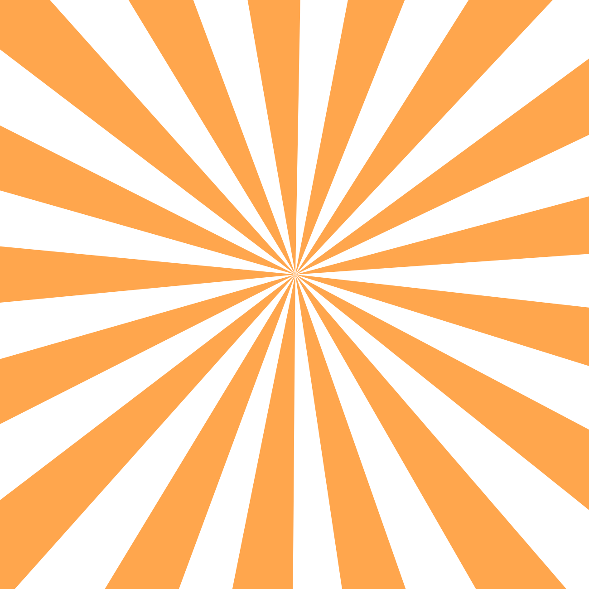

<div class="mz-start-background">
  
  
  
</div>

<header class="main-header">

</header>

<main class="main-container">
  <router-outlet></router-outlet>
</main>

<footer class="main-footer">
  <p>Made as an preview for my github, enjoy!</p>
</footer>
